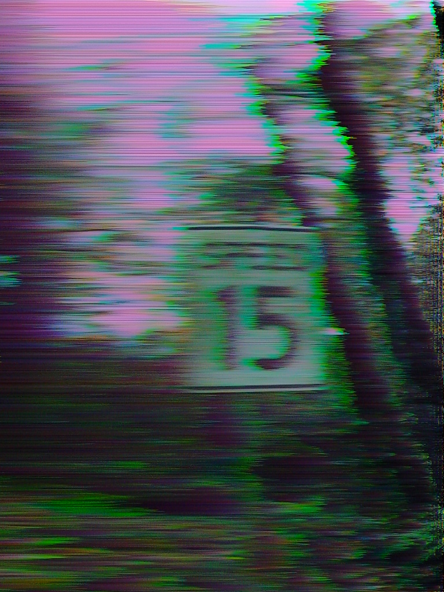

Hi, my name is Ben Perez. I'm currently doing my undergrad as mechanical engineering major with a focus on robotics at Oregon State University.
Photography is one of my many hobbies and I especially enjoy unconventional photography (if you couldn't tell).
I am mostly self-taught, though I did take a digital photography class in highschool. Last year, one of my photos was published in OSU's
PRISM art magazine (you can find it on page 92 of the Visions edition!).
Outside of photography, I have experience in graphic design, programming (I made this website myself), digital art, and 3D-modeling.

There are a few things that go into my photography. First, and probably most importantly, is the choice of camera.
I've always loved the aesthetic of older digital cameras, and I currently use a Sony FD Mavica 100, which was indroduced in 2002, before I was born.
Of course, the camera doesn't produce those effects on its own, that's where circuitbending comes in.
Circuitbending is the idea that any electronic device can be modified in some way to produce unintended effects.
Typically, this is done by altering the device's circuitry in some way, like adding new electronic components, shorting wires, and sometimes
connecting two completely different devices together. What really fascinates me, though, is what it can do to cameras. By just souldering a
few wires onto a circuitboard, you can completely change the images taken. Then, you can add dials and switches to gain some control over
what kinds of effects are produced. In the end, you can get images like the one on the right.
After circuitbending comes post processing. I almost never edit the photos after they're taken, though I've started to experiment with using a HEX editor
to intentionally corrupt my photos.
I'm developing an app for the messaging platform, Discord, which you can find on my Github page here.